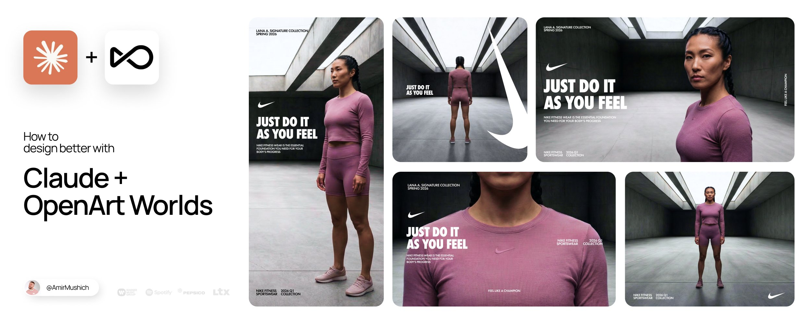

EC
AI Commerce Studio
素材生成与模型推荐
1
创建任务
2
选择与反馈
3
后台依据
返回 Case Study
创建素材任务
先说明要生成什么、在哪里使用。系统把业务目标转换成素材约束，并默认推荐合适模型。
素材类型
选择一个主要交付物
白底产品图
虚拟模特图
商品场景图
商品短视频
商品素材
Demo 使用已完成的 Benchmark 样例

已载入 1 组商品参考图
系统将识别商品品类、颜色、材质、图案和必须保留的主体区域。
更换素材
生成约束
使用业务语言配置，无需理解模型参数
商品信息
请填写商品信息
生成目标
保持全部商品上身效果与图案一致，人物姿态自然，生成复古加油站广告图。
请填写生成目标
投放规格
淘宝 1:1
小红书 3:4
抖音 9:16
生成偏好
人物自然
保真优先
广告质感
状态已更新